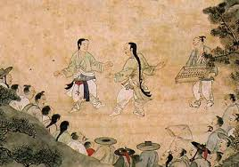

Home
Origins
Rules
Skills

Taekwondo originated in South Korea, almost 2,000 years ago.
The name Taekwondo is derived from the Korean word "Tae" which means foot. "Kwon" means fist and
"Do" means the way of. So basically, a literal translation would be the way of the foot and fist.
Taekwondo started in a period of time when there were three main kingdoms. Because of this, it is hard
to pinpoint the exact place and time at which Taekwondo originated. In addition, it was hard for Taekwondo
to become uniform because there was little communication between the three kingdoms. Also, duirng this time
Taekwondo was not meant for the general public. In fact, only military members could learn a form of Taekwondo
that is similar to today's, but still very different.
A Brief Timeline of Taekwondo
- 50 B.C. - Possible date of first cave drawings depicting men in TKD poses in Korea
- 1959 A.D - Skipping forward a lot, the first unification of the much smaller "kwans", or
variations on a similar martial art, came when the Korea Taekwondo Association(KTA) was formed.
- 1966 - The Internation Taekwon-Do Federation(ITF) split away from the KTA as a seperate governing body.
- 1973 - The South Korean government established the 'Kukkiwon' as the new national academy for TKD.
- 1973 - Kukkiwon and the ITF promoted the creation of the World Taekwondo Federation(WTF) which changed
its name due to its unfortunate acronym in 2017 to World Taekwondo
- 1988 - Taekwondo becomes a demonstration event at the 1988 Olympic games in Seoul.
- 2010 - Taekwondo is accepted as a Commonwealth Games sport.
For more information about Taekwondo and its origins, Click Here